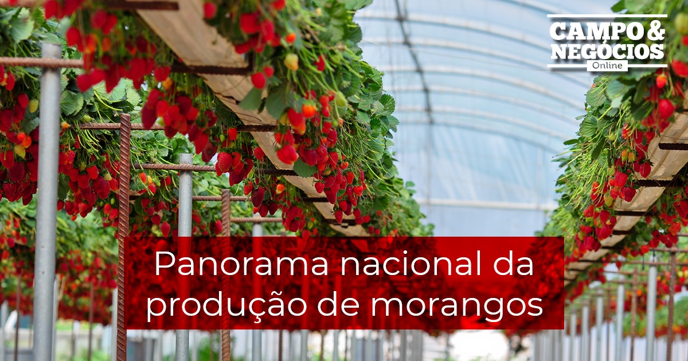
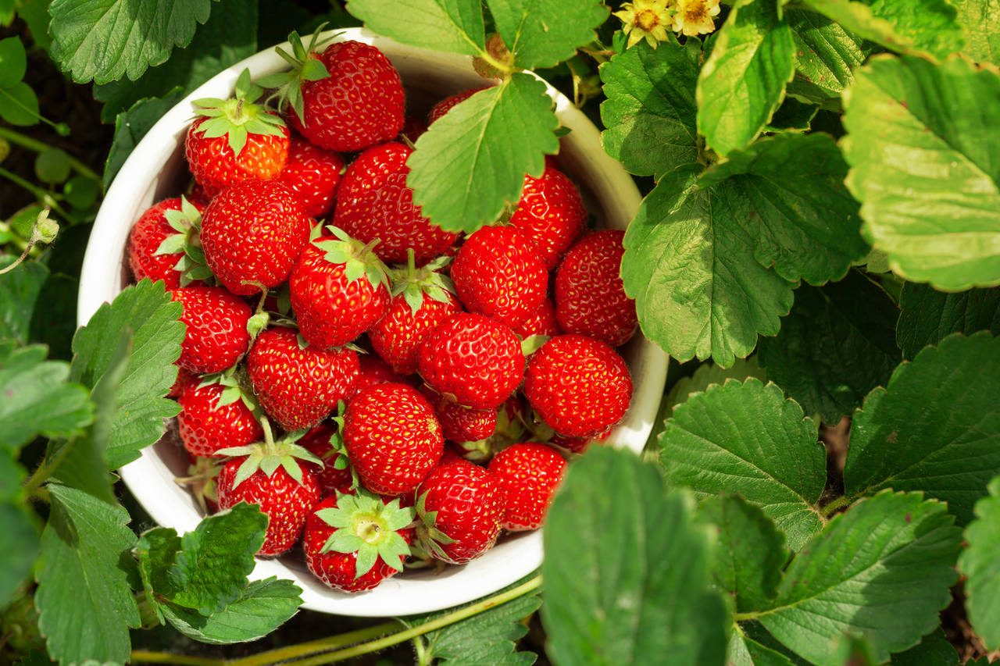
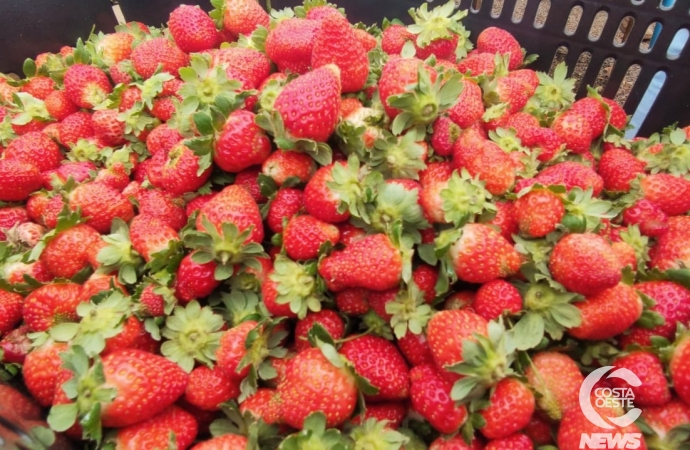

A produção de morangos em Santa Maria do Oeste, PR, tem crescido significativamente nos últimos anos, tornando-se uma das principais fontes de renda rural da região. Entre 2018 e 2023, a produção quase quintuplicou, passando de 798 para 4,7 mil toneladas
PRODUÇÃO
Paraná como produtor
O Paraná se destaca como um dos maiores produtores de morangos do Brasil, com uma grande área plantada e um aumento significativo na produção nos últimos anos.
CULTIVO
O avanço nas técnicas de cultivo, como a utilização de mudas de alta qualidade, a irrigação e o uso de defensivos agrícolas, tem contribuído para o aumento da produção e da qualidade dos frutos.
COMERCIALIZAÇÃO
O morango é a principal fonte de renda rural da cidade, envolvendo uma grande parcela da comunidade na cadeia produtiva.
A produção de morangos em Santa Maria do Oeste tem apresentado um crescimento expressivo, impulsionado pela crescente demanda e pelos avanços nas técnicas de cultivo.
GALERIA
  